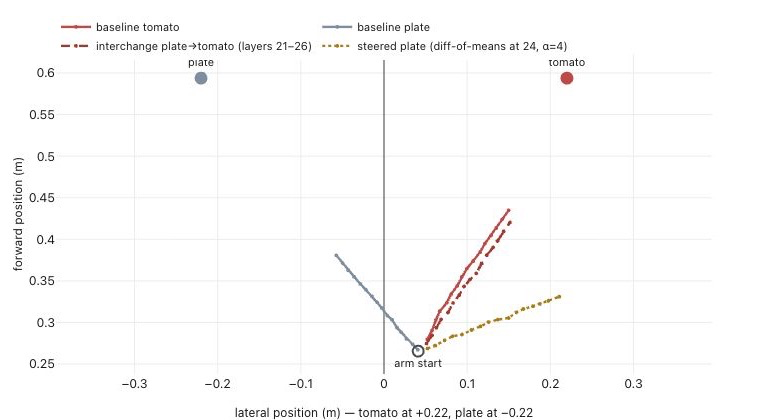
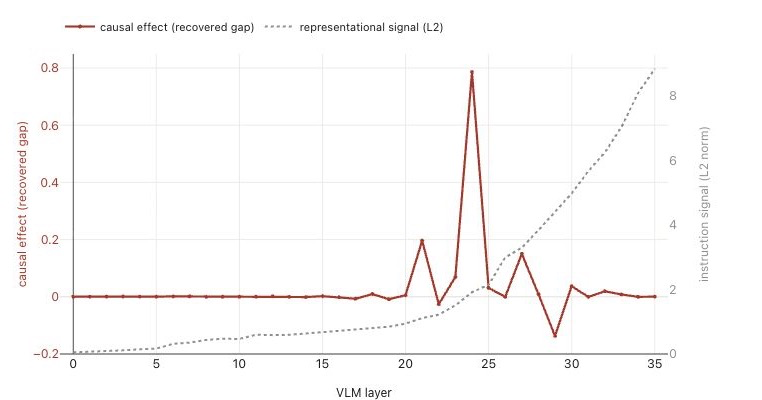
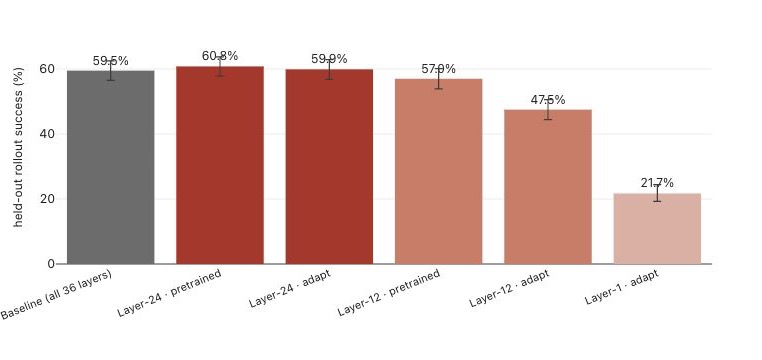

Causal analysis improves VLA efficiency：从因果定位到单层动作接口
Causal analysis improves VLA efficiency：从因果定位到单层动作接口
1. 这份报告值得记住什么
Goodfire 技术报告，页面标注 2026-08-02。 网页 metadata 的作者标识为 aiden-goodfire，未列完整作者名单与会议信息，不按已同行评审论文处理。阅读材料为原始网页全文及交互图表数据；以下图号沿用报告，未运行模型或复现实验。
- VLM 中有信息，与动作专家使用信息，是两件事。 MolmoBot 的指令表征差异随深度增大，改变动作最有效的接口却集中在 L24。
- 作者把定位结果变成了架构：仅在一个动作块保留 cross-attention，经过预训练或微调后，在受测仿真任务中获得接近全层基线的成功率。
- 哪一层可用取决于训练预算。L12 经完整预训练能明显恢复表现，只做短程适配则落后；当前模型的因果峰值不等于所有可训练架构的唯一答案。
- 大幅减少的是特定实现下的静态计算量。端到端时延收益、广泛任务泛化与真机等效性仍需更多证据。
我认为最有价值的贡献，是把“解释模型”落实成一个可以用闭环任务检验的架构预测；最需要防止的误读，是把局部动作干预、模型压缩与实测机器人提速合并成一个结论。
2. 关键问题：36 条连接，哪些真的在传递当前动作所需的信息？
Golden Case：同一张图里有番茄和盘子。 图像和机器人状态不变，分别要求抓番茄或抓盘子，MolmoBot 预测的首个动作片段朝向不同目标。现在保持“抓盘子”的输入，只把某一层收到的特征换成“抓番茄”运行的特征：机械臂的预测动作会跟着改吗？这是报告 §2–3 的真实案例。
原始 MolmoBot-DROID 使用 36 层 Molmo2-4B VLM 和 36 个 DiT 动作专家块，动作块 $k$ 通过 cross-attention 读取 VLM 层 $k$。动作专家通过 flow matching 逐步生成一个短动作序列。
全层连接提供了很多读取机会，但参数规模、特征差异大小或能否用探针读出目标，都无法单独回答策略到底在用哪条连接。直接拿末层特征做压缩也可能选错。这里的具体问题不是原模型抓取失败，而是它是否反复为对当前行为贡献有限的接口付出计算成本。
3. 关键方法：先转移动作，再决定保留哪条连接
沿番茄—盘子案例走一遍
① 建立一对自然输入。 同场景、同本体状态，只换目标指令；分别得到番茄运行和盘子运行的 VLM 特征。固定模型权重，进行推理时干预。
② 只替换接口，不替换整个模型。 在盘子运行中，把动作块 $k$ 接收的 cross-attention context 换成番茄运行对应层的 context，其余路径保留。逐层扫描后，再联合替换 L21–L26，检查分布在多条连接上的信号是否被单点测试漏掉。每项测量平均 64 次配对 flow-noise 抽样，干净运行与干预运行共用噪声，以减少随机生成的混杂。
③ 测“是否向另一个目标移动”，而非只测“动作是否变了”。 报告沿番茄—盘子轴统计预测的 16-step reach。将其文字定义写成一维形式：
这里 $r$ 是该轴上的有符号 reach，$R_k=0$ 表示无转移，$R_k=1$ 表示恢复整个反事实差距；负值表示朝反方向变化。它不是任务成功率，也不是完整动作序列的相似度。 当原始两种指令几乎不改变动作时，分母会很小，这类归一化指标也会变得不稳定。
源图数据给出盘子基线约 −0.0963 m、番茄基线约 +0.0844 m；只替换 L24 后变成 +0.0457 m，对应作者报告的 $R_{24}=0.7861$。联合替换 L21–L26 可恢复完整效果（§3、Figure 2–3）。

Figure 3｜看原本朝左侧盘子的灰线，与移植后朝右侧番茄的红色虚线。 金色线是沿 L24 的两组激活均值差方向施加干预。图中展示的是首个动作片段的预测轨迹，不能据此认定已完成抓取。来源：报告 Figure 3，浏览器截取原图。
④ 从定位结果提出可检验的架构。 删除另外 35 个动作块中的 cross-attention，仅在动作块 L24 保留读取。其余动作块仍参与生成，不能理解成动作专家只剩一层，也不是让所有动作块统一读取同一 VLM 层。新接口可完整预训练，或从全层 checkpoint 做 50K 步适配；后者的参数冻结范围、优化器及完整训练配方在网页中未交代清楚。
原文 §9 已承认中间层读取和部分深度读取并非首次提出。这里的区别是用行为干预选接口，并进一步减少执行 cross-attention 的动作块数量。
定位证据为什么比一条峰值曲线更强？
报告还做了三个相互补充的检查（§3）：
- 破坏相关接口：用跨场景均值替换 L21–L26 的激活，盘子方向的 reach 接近零；替换无关层则几乎不变。这支持该带对当前动作差异的重要性。
- 定向而非任意扰动：沿番茄/盘子的激活均值差方向增加干预强度，动作进一步朝番茄偏转；等范数随机方向没有呈现相同的定向趋势。随机方向仍可能改变动作，不能说它完全无效。
- 细分承载位置：仅移植物体 token 无效，周围指令位置却可转移动作；L24 图像位置的移植无效。因此词面上的目标名，并不必然是传递动作条件的主要 token。
但“输入只改了指令”并不意味着混合后的内部状态必然仍落在自然激活分布上。自然来源的 activation patching 加上均值消融、随机方向对照，比任意加噪更有解释力；它仍是特定干预算子的证据，不能直接宣称找到了完整决策机制。
4. 数据与结果：把可读、被用和训练后可替代分开
4.1 可解码的目标，未必在那一层被动作专家使用
在留出物体和位置的 probe 分析中，目标空间位置在中间层逐渐变得可解码，L22 的相关系数达到 $r=0.9286$；接口干预峰值则在稍后的 L24（§5、Figure 5）。报告没有充分交代探针训练配方、样本量和划分细节，因此应保留“作者报告的可解码性”这一层证据。

Figure 2｜灰色虚线是两种指令引起的表征差异范数，红线是接口 patch 的 reach 恢复比例。 二者使用不同纵轴，幅值不能直接比较；应看峰值位置和深度趋势。灰线继续上升，红线在 L24 达到最大，说明更强的表征差异并不保证更强的下游使用。来源：报告 Figure 2。
原图图注把 L24 后描述为回到零，但内嵌数据仍有 L27 的 +0.1503 与 L29 的 −0.1371。更准确的说法是主峰集中，后续效应总体较小且有正负波动，不是其余层严格无效。换三个 flow-noise seed 仍得到 L24 峰值，验证的是噪声稳健性，不等同于换场景、换任务后的稳健性。
4.2 跨模型复现的是“集中读取”，不是相同的语义通道
| 模型与分析样本 | 主要发现 | 解释边界 |
|---|---|---|
| MolmoBot，番茄—盘子反事实 | L24 的指令相关接口移植最有效；关键带为 L21–L26 | 首个动作片段与特定目标对比 |
| π0.5，400 个留出 DROID steps | prefix K/V 消融发现 L13–L16 中后段带，主要由图像位置承载，L14 另有状态贡献 | L0 还有显著模板效应；L14 不是全局最大峰 |
| MolmoAct2，200 个 DROID steps | 动作块 17–20 的峰主要由 10-token 本体状态区段承载 | 状态与模板联合遮蔽接近全接口遮蔽，不等于仅状态遮蔽完全解释全部效应 |
表据 §4、Figures 1/4。三者分别使用反事实移植或 K/V 置零，指标也不同：MolmoBot 测 reach 恢复比例，π0.5 以干净开环误差归一化动作变化，MolmoAct2 用记录动作的标准差单位。归一化深度曲线可比较峰在哪里，不能比较谁“更因果”。
还有两个容易被跳过的限制。第一，π0.5 的指令反事实主要是 paraphrase，指令变化小可能只是语义没有真正改变，不能直接推出它普遍忽略语言。第二，VLM 内部已经融合信息；“从状态 token 位置读取”并不意味着其中只有本体状态，更不意味着视觉对上游计算没有贡献。
4.3 最强结果：保留 L24 后重新训练，闭环表现接近原模型
作者在 MolmoSpaces 的留出 FrankaPickDroidBench 场景中，对每种架构运行约千次闭环 rollout（§6、Figure 6）。
| cross-attention 配置 | 训练方式 | 成功数 / 总数 | 成功率 | 95% 二项置信区间 |
|---|---|---|---|---|
| 全 36 层 | 发布基线 | 609 / 1023 | 59.5% | 56.5–62.5% |
| 仅 L24 | 完整两阶段预训练 | 620 / 1020 | 60.8% | 57.8–63.7% |
| 仅 L24 | 50K 步适配 | 592 / 988 | 59.9% | 56.8–62.9% |
| 仅 L12 | 完整预训练 | 568 / 996 | 57.0% | 53.9–60.1% |
| 仅 L12 | 50K 步适配 | 473 / 996 | 47.5% | 44.4–50.6% |
| 仅 L1 | 50K 步适配 | 218 / 1004 | 21.7% | 19.3–24.4% |

Figure 6｜关键对比是 L24 与 L12 的适配结果，以及 L12 预训练后的恢复。 这比只展示一个不掉点的压缩模型更有说服力：接口位置与训练路径确实影响结果。来源：报告 Figure 6。
L12 与 L24 的适配 flow-matching loss 分别为 0.0063、0.0062，闭环成功率却明显不同。相近的离线动作损失不足以替代 rollout 验证。 L12 完整预训练后又能显著恢复，说明当前 checkpoint 不常用的接口，不一定无法通过重新训练学会使用。
两个 L24 版本对基线的差异未达统计显著，支持“受测条件下未观察到明显退化”。报告没有给出预先设定容忍界限的非劣效或等效检验，也未充分报告多训练 seed 波动，不能把这一结果升级为严格的性能等价保证。各组 rollout 数不同，是否使用严格配对场景也未说明。
4.4 算量收益与真机结果，应各按自己的分母理解
保留单个 cross-attention 块，作者报告该部分参数减少 97%、整个动作专家参数减少 27%、全模型参数减少 2.9%。这三个百分比的分母不同（§6）。
计算量采用假设的 928-token context、16-token action horizon 与 10 次 flow 调用：动作专家每次调用由 110.9 降至 7.18 GMAC，约减 93.5%；若再截掉不被读取的 VLM 层 25–35，VLM 加动作专家每个 action chunk 由 7.230 降至 4.323 TMAC，约减 40.2%。本文保留正文的 MAC 单位，避免把页首 FLOP 表述混成实测时间。
这些是静态算子计数，不是 GPU 延迟，也不是机器人任务耗时。 原文 §9 进一步指出，所用 MolmoBot 实现每个 flow step 都重新计算 VLM 特征投影与 cross-attention K/V；这些只依赖条件的计算原本可以缓存。因而还缺少一个重要基线：先把全层模型的条件计算缓存好，再比较接口剪枝的额外收益。
真机部分是另一组 π0.5 实验：作者在完整 DROID 数据上自训 checkpoint，输出绝对关节位置，再微调出只读取 L14–L16 的版本。在 Franka Emika 的简单 pick-and-place 任务上，两组均为 22/25 成功，Wilson 区间均为 70.04–95.83%，Fisher 检验 $p=1.0$（§7）。Figure 7 图注笼统称 vanilla 为发布模型，与本节明确写出的自训设置不一致；这里以更具体的实验描述为准。
这组 pilot 支持该设计原则在一项真机任务上的可行性，不能证明真实机器人广泛无损。任务耗时差异也未达显著；Figure 7 的中位时间只统计成功轨迹，不能解释成模型推理提速，更不能把两个平台共用的时间轴当作可直接比较的性能尺度。
5. 我的判断与下一步实验
1. 因果定位最直接的用途，是选择低成本改造点。 L24 在原策略中已承载强动作影响，短程微调即可保留受测表现；L12 则需要更充分训练。因此我会把层选择看作“保留现有计算分工需要多少重训练”的问题。下一步应固定数据与算力预算，对多个保留层画出成功率—训练步数曲线，区分好的适配起点与好的最终架构。
2. 读取位置提供干预入口，但还没有完全定义被传递的变量。 指令周边 token 能转移动作、空间位置可被探针解码，并不足以区分接口传的是物体目标、相对位移还是动作倾向。可检验的下一步是固定物体位置、改变机械臂初始位置，再交换接口：若保持目标，轨迹应指向同一世界位置；若转移的是位移命令，落点会随起点改变。该对照比再训练一个高相关探针更接近机制问题。
3. 压缩收益应先过“缓存基线”和“闭环时延”两关。 报告的静态大幅下降与短程适配成功值得尝试，但不能预设能按比例转成硬件收益。复现时我会同时报告全层缓存版与剪枝版的单 chunk 延迟、显存和成功率，并匹配控制频率比较策略质量；随后再允许更快版本提升观测频率，测系统级收益。
6. 连接与发现
- MOC-VLA — 从内部动作影响的定位，走到接口压缩与闭环评估。
- MOC-Interpretability — 区分可解码性、干预效应与训练后可替代性三个命题。
- Shallow-π-Knowledge-Distillation-for-Flow-Based-VLAs-联合减深与选择性蒸馏 — 可对照“减浅并蒸馏”与“保留因果接口”，共同检查模型近似误差与控制延迟的贡献。